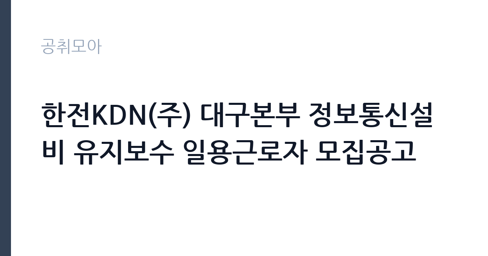

[공공기관] 한전KDN(주) 대구본부 정보통신설비 유지보수 일용근로자 모집공고
한전KDN · 대구 · 마감 2026-10-26 (D-15) · 출처 잡알리오

한눈에 보는 모집 조건
| 기관 | 한전KDN |
|---|---|
| 공고명 | 한전KDN(주) 대구본부 정보통신설비 유지보수 일용근로자 모집공고 |
| 고용형태 | 일용직 |
| 근무지 | 대구 |
| 게시일 | 2026-10-12 |
| 마감일 | 2026-10-26 (D-15) |
지원자격, 이렇게 읽으세요
- 공공기관 채용공시
- 세부 조건은 원문 공고문 확인
공통 자격은 학력과 연령, 외국어 제한이 없으며, 병역법에서 정한 병역의무 불이행 사실이 없어야 하고 회사 인사규정의 채용결격사유에 해당하지 않아야 합니다. 직종별 자격과 상세 사항은 모집공고문의 지원 자격에서 확인하셔야 하며, 정보통신설비 유지보수 관련 자격증이나 현장 경험이 있으면 선발에서 유리합니다. 남자는 병역 필이나 면제가 필요할 수 있으니 원문에서 대조하십시오.
이 공고의 포인트
이 공고의 특징은 한전KDN이라는 전력 ICT 전문 공기업의 현장에서 일한다는 점입니다. 한전KDN은 한국전력의 전력통신과 정보시스템을 전담하는 회사로, 여기서의 유지보수 경험은 이후 전력과 통신 분야 취업에서 실무 이력이 됩니다. 일용직이라 고용 안정성은 낮지만, 정규직 공채의 스펙 부담 없이 현장에 들어갈 수 있는 입구라는 점이 장점입니다. 대구본부 근무라 대구경북 거주자에게는 통근 부담이 적습니다.
전형은 어떻게 진행되나
잡알리오 공시와 한전KDN 채용 관련 안내에 따라 원서를 접수합니다. 서류심사와 면접심사를 거쳐 최종 합격자를 선발하는 것이 일반적인 흐름이며, 일용직 모집은 수시로 진행되어 일정이 빠르게 돌아가는 경우가 많습니다. 접수 방법과 제출서류, 선발 일정은 원문 모집공고문에서 확인하십시오.
원문에서 확인한 전형 방식
가. 공통 - 학력, 연령, 외국어 제한 없음 - 병역법 제 76조에서 정한 병역의무 불이행 사실이 없는 자 - 당사 인사규정 2.1.4(채용결격사유)에 해당하지 않는 자 나. 직종별 자격 및 상세 사항은 모집공고문 지원 자격 참조
이런 분께 추천해요
- 전기나 통신, 정보통신설비 관련 자격증과 현장 경험이 있는 분입니다. 실무 투입이 빠른 일용직 특성상 경험자의 강점이 큽니다.
- 학력과 스펙 부담 없이 공기업 현장 경험을 만들고 싶은 분입니다. 이후 기능직과 공무직 지원의 디딤돌로 삼을 수 있습니다.
- 대구에서 근무가 가능하고 단기 현장 근무에 전념할 수 있는 분입니다.
지원 전 체크리스트
- 직종별 지원 자격을 원문 모집공고문에서 확인하셨습니까.
- 보유한 자격증과 경력증명서를 제출서류에 포함하셨습니까.
- 일용직의 근무형태와 임금 지급 방식을 이해하고 지원하셨습니까.
- 접수 마감일인 10월 26일 전에 접수를 마치실 수 있습니까.
모집 일정과 제출 타이밍
공고 게시일은 2026년 10월 12일이며 접수 마감은 10월 26일입니다. 약 2주의 접수 기간이 있으나 일용직 모집은 필요 인원 충원 시 조기 마감되기도 하므로, 지원을 결심했다면 초반에 접수하시기를 권합니다.
직무 이해하기: 공공기관
한전KDN 대구본부 전력통신팀의 정보통신설비 유지보수는 변전소와 사업소의 통신장비 점검과 장애 대응, 선로와 단말장치 정비 지원을 맡습니다. 전력계통의 신경망에 해당하는 통신망을 유지하는 업무라 정확성과 안전 수칙 준수가 중요하며, 현장 출동과 야외 작업이 포함됩니다. 전력과 통신 실무를 함께 익힐 수 있는 현장입니다.
자기소개서 작성 팁
자기소개서는 현장 실무 능력과 성실함을 중심으로 쓰십시오. 관련 자격증과 현장 경험, 안전 수칙을 지킨 사례를 구체적으로 서술하시고, 일용직 자리에서도 책임감을 갖고 일하겠다는 태도를 보여주십시오. 분량은 간결하게, 사실 중심으로 작성하는 것이 좋습니다.
면접 준비 포인트
면접에서는 지원 동기와 현장 적응력, 안전 의식을 묻습니다. 통신설비나 전기 현장 경험을 사례로 들어 답변하시고, 체력과 출퇴근 가능 여부 같은 현실적인 질문에도 솔직하게 답하십시오.
급여·근무조건 읽는 법
일용근로자의 임금은 일급제로 지급되며, 구체적인 일당 단가와 근무일수, 주휴수당과 4대보험 적용 여부는 해당 모집공고문의 근로조건에서 확인하셔야 합니다. 최저임금 이상의 지급이 법으로 보장되므로 공고문의 임금 조건이 기준에 맞는지 대조하시고, 연장근로와 휴일근로 수당 기준도 함께 확인하십시오.
자주 묻는 질문
- 일용직도 4대보험이 적용됩니까?
일용근로자도 근무일수와 근로시간 요건을 충족하면 고용보험과 산재보험 등이 적용됩니다. 정확한 적용 기준은 해당 공고문의 근로조건과 근로계약서에서 확인하십시오. - 정규직 전환이 가능합니까?
일용직은 정규직 전환을 전제로 한 채용이 아닙니다. 다만 현장 경험은 이후 한전KDN과 전력 분야 공채 지원에서 실무 이력으로 평가받을 수 있습니다. - 필요한 자격증이 있습니까?
공통 자격에 학력과 연령 제한은 없으나, 직종별 자격은 모집공고문의 지원 자격에서 확인하셔야 합니다. 정보통신이나 전기 관련 자격증이 있으면 선발에 유리합니다.
함께 보면 좋은 공고
[공공기관] 2026년도 한국임업진흥원 제3차 인재채용(보훈특별고용) 공고 — 마감 2026-11-02[공공기관] 2026년 제6차 국립생태원 기간제근로자(수탁과제) 채용 재공고 — 마감 2026-10-21[공공기관] 제2026-6회 기초과학연구원 지하실험연구단 박사후연구원 채용 공고 — 마감 2026-11-06출처: 잡알리오 공개정보를 바탕으로 공취모아가 정리한 안내글입니다. 모집 조건·일정은 변경될 수 있으니 지원 전 반드시 원문 공고문을 확인하세요. 본 글은 정보 제공용이며 합격을 보장하지 않습니다.